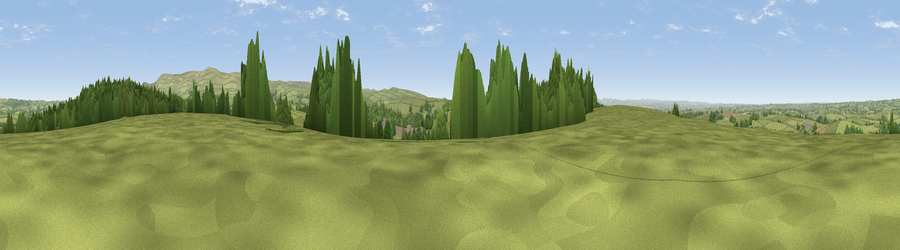

Viewpoint near Lydford
#18105 in England · top 32% of its area beats it · near LydfordWhere it is
The exact computed spot (SX 48325 85975). Click the marker for map links.
The view, rendered

A 360° render of this exact spot computed from the terrain model, tree cover and land cover — summer colours, afternoon light, calibrated against photographs of famous viewpoints. Real trees, hedges and buildings will differ in detail.
The panorama
Grey silhouette: terrain skyline in each direction (720 bearings, Earth curvature and refraction included). Dashed green: skyline with trees (+15 m) and buildings (+8 m) as obstacles. Blue strip: how far the ground is visible on each bearing.
Where the view opens
Wedge length = distance to the farthest visible ground on that bearing (vegetation-aware). Rings at 10, 25 and 50 km.
What fills the view
79% grassland · 18% woodland · 2% cropland ·
Angular shares of the visible panorama (visual magnitude), not map area. Landscape diversity 0.27 (0–1 Shannon).
Key numbers
More beautiful places nearby
The staircase of upgrades: each row has a higher view potential than everything closer. Driving times are estimates from straight-line distance, calibrated against real road routing — check an actual route before setting out.
| Place | Direction | Drive | Score |
|---|---|---|---|
| Viewpoint near Lewdown | WSW · 0 km | ~2 min | 58.8 |
| Viewpoint near Mary Tavy | SSE · 5 km | ~11 min | 72.3 |
| Brent Tor | S · 6 km | ~12 min | 73.4 |
| Viewpoint near Lydford | E · 6 km | ~12 min | 73.7 |
| Great Links Tor | E · 7 km | ~14 min | 77.8 |
| Yes Tor | ENE · 11 km | ~20 min | 78.5 |
| Viewpoint near Dousland | SSE · 18 km | ~31 min | 81.0 |
| Viewpoint near Lee Moor | SSE · 24 km | ~40 min | 82.7 |
50.65365, -4.14701 · source: screening · position refined by local search. Computed location — check access rights before visiting.